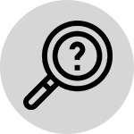

HOME > 연구소안내 > 비전
비전
항상 더 좋은 식품을 제공함으로써 고객의 더 나은 삶에 기여하며
고객의 전 생애주기에 걸쳐 최고의 가치를 선사하는 연구소
경영방침
-
- 창의경영
- 자유롭게 의견을 교류할 수 있는 소통의 장을 마련하고 활성화 시킵니다.
-
- 신뢰경영
- 자부심과 즐거움을 느낄 수 있도록 인재중시철학을 확립하고 실천합니다.
-
- 현장경영
- 고객, 임직원, 협력업체와의 직접 접촉을 통한 현상 파악 및 의견을수렴합니다.
-
- 인재양성
- 체계적 교육 및 경력개발을 통해 최고 수준의 산업/지역 전문가로양성합니다.
핵심가치
-
- 고객중심
- 고객이해를 바탕으로 고객관점에서 판단하고
행동하며 고객과의 약속은 반드시 준수
-

- 호기심
- 새로운 것에 대한 관심과 끊임없는 물음으로 세상을 풍요롭게 할 그 ‘무엇’을 만들어 내는 힘
-
- 창의성
- 고정관념에 사로잡혀 있는지 스스로 점검하고 끊임없는 혁신을 통해 차별화된 제품과 서비스제공
-
- 책임감
- 스스로의 일에 주인이라는 생각을 갖고 정직한 방법으로 주어진 업무를 완수하여 성과 달성
-
- 도전
- 최고의 제품을 만들기 위하여 실패를 두려워 하지 않는 진취적 마인드
-
- 열정
- 불가능은 없다는 도전정신으로 더 높은 목표를 달성하기 위한 끊임없는 노력